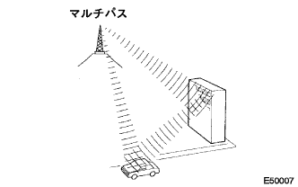
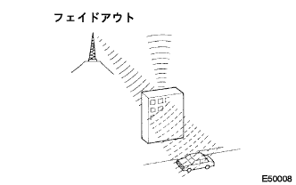

The frequency of the radio used in radio broadcasting is as follows.

"Wide Multi AV Stesion" System Function Description |
The frequency of the radio used in radio broadcasting is as follows.
 |
There is a considerable difference in the size of the AM and FM monaural service range, and even if the AM can be clearly received, the FM stereo broadcast may not be received.In addition, FM stereo is not only the smallest service range, but also receives noise and other interference (“faving noise”, “multi -pass noise” and “fade -out”).
 |
Fajing noise
In addition to electrical interference, AM broadcasting is easy to receive other interference, especially at night.At night, the AM radio waves reflect on the ionization layer, and the reflected radio waves occur in the way of radio waves emitted from the same broadcasting station that reaches the vehicle antenna.The noise generated by this interference is called "fajing noise".
|  |
Multi -pass noise
The interference caused by the radio wave reflects on obstacles is called "multipus".The multi -pass occurs when the signal emitted from the broadcasting station antenna reflects on the building or the mountains and gets in the way of the signal that is received directly.The noise generated by this interference is called "multi -pass noise".
|  |
Fade out
FM radio waves are higher than AM radio waves, so they reflect on obstacles such as buildings and mountains.For this reason, when the vehicle is shadowed by buildings or obstacles, the FM signal gradually disappears or weakens.This phenomenon is called "Feedout".
Questions for noise
It is very important to understand your complaints well in making noise trouble shooting.Therefore, use the question table below to correctly diagnose the problem.
| Broadcasting method | Interview content | Estimated cause |
|---|---|---|
| AM | Noise occurs in certain places. | There is a high possibility of outpatient noise. |
| AM | Noise occurs when listening to a hard -hearted broadcast. | The same program may be broadcast from each regional broadcasting station, and if the program is the same, there is a possibility that customers are listening to different broadcasting stations.Especially in the case of NHK, these mistakes often occur. |
| AM | Noise occurs at night. | It is highly likely that the radio wave from a distant broadcast. |
| Fm | Noise occurs in a specific place while driving. | There is a high possibility of multi -pass noise and fajing noise caused by changes in FM frequency. |
Points to note when confirming
The noise in the radio has been prevented, so there is no harm to the actual use, and there is almost no large noise.If you have a very large noise on the radio, make sure that the ground where the antenna is attached is normal.
To see if all the regular noise prevention parts are installed correctly, or if they are not used external products, or do not use regular wiring.
If you do not match the radio channel (do not synchronize with the broadcast), the noise will be noticeable, making it easier to judge the phenomena.
 |
Antenna and noise
The electric signal received by the antenna is transmitted to the radio through the coaxial cable core wire.Noise waves other than radio waves enter this core wire and cause noise on the radio.To prevent the noise from entering the radio, the coaxial cable cable is covered with a mesh -shaped wire called a shield wire.This shield wire prevents noise from entering by flowing noise to the ground.
This player can use only music CDs with the figure marked.
 |
cleaning
The bite of the CD is a soft and dry cloth such as a plastic glasses wiping, and lightly wipes it in a radiant direction from the center to the outside.
Disk used
This player can only use the MD marked with the figure.

The “Wide Multi AV Station System” is communicated between devices by AVC-LAN.
AVC-LAN's master is the navigation receiver ASSY ("Wide Multi AV Station").
Navigation receiver ASSY contains the resistance required for communication transmission (TX+← → TX-terminal 60-80Ω).
In the AVC-LAN circuit, if abnormalities such as a short circuit of the communication line,+B short and GND short occur, the "Wide Multi-AV Station" system will not work properly due to interruption of communication.
The "Wide Multi-AV Station" system has a diagnostic function, and can confirm the connection of the device connected by the AVC-LAN and perform a failure diagnosis.(The test result is displayed on the display part)
The devices that make up the AVC-LAN are set with a three-digit number (notation in the hexadecimal number) called a device code (physical address).
Each function (unit) that constitutes the interior of the AVC-LAN device is set with a two-digit number (notation in the hexadecimal number) called a logical address.
The "Wide Multi AV Station" system has a back guide monitor system adjustment function, and when removing the back guide monitor system -related parts, it is necessary to adjust using the diagnostic screen.(The point is reference)
reference)